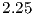

Figure 1: Level of human capital on expected productivity growth, decision
individuals
In this modeling assignment we will introduce a subsidy to education in the model used in section 13.3.2 of Aghion and Howitt (2009). In section 13.3.2 Aghion and Howitt describe a model that was inspired by Acemoglu (1997) and Redding (1996). The model looks at the composition of education spending and the way it interacts with the level of technological development in a country. Individuals make a decision regarding the amount of investment in education in period 1. At the same time, entrepreneurs decide how much they would like to invest in innovation. These decisions depend on the expected level of productivity growth and the expected level of human capital respectively. Thus, the decisions depend on the decision of the other party and as a result of this interaction; there are multiple growth paths; a low-growth equilibrium and a high-growth equilibrium. Since it is hard to leave the low growth equilibrium this equilibrium is often called a low-development trap. Here, we will introduce subsidies on education and see what the result of this subsidy is on the equilibriums and whether this might be a solution for the low-development trap. First, we will give an overview of the model in section 13.3.2.
In this model all individuals live for two periods and are born with a level of human capital that is equal to one. Individuals, as in most models, maximize their utility, with a discount factor for consumption in the future since they value consumption today more than consumption tomorrow.
|
| (1) |
The consumption functions of the individuals are the earnings of the young in every period. These function are given by the following formulas:
|
| (2) |
|
| (3) |
The earnings of individuals when they are young equal the amount of production time times the existing leading-edge technology, since this is the amount they produce when they are self-employed. Human capital is present in equation (2) but it is normalized to one. Here we assume that individuals work for a firm when they are old. Old individuals earn a fraction of the output surplus in which the level of human capital and the level of the leading-edge technology determine this output surplus. Individuals cannot decide upon the level of the leading-edge technology but they can influence their level of human capital when they are old. When they invest in education when they are young, their human capital when they are old will be higher than the level of human capital when they were young. The more they will invest in education, the higher the increase in human capital is; this is formulated in equation (4).
|
|
|
| (4) |
Thus, there is a trade-off between the costs (decrease in production time when young) and the benefits (increase in human capital when old) of education. When individuals maximize their utility, they make a decision regarding the fraction of their working time they want to invest in education when they are young. After inserting the equation for human capital (4) in the consumption function (3) and inserting the consumption functions (2) and (3) in the utility function (1) it is possible to maximize the utility function with respect to . Rewriting this first order condition gives:
|
| (5) |
Equation (4) shows the optimal fraction of working time individuals invest in education. When individuals invest this fraction in education their utility is maximized. As equation (4) shows this fraction depends on the expected productivity growth in the country. When individuals expect that the productivity growth will be high, they will invest more in education. Figure 1 shows this correlation between expected productivity growth and the level of human capital.
Entrepreneurs face a decision regarding the amount they want to invest in innovation. Investing in innovation costs money but it will increase the output surplus. Entrepreneurs maximize their profit that is given by the following formula:
|
| (6) |
Rewriting the first order condition of equation (6) gives the following formula for the optimal amount of investment in innovation:
|
| (7) |
Equation (7) shows that the first order derivative of the profit function with respect to , the probability that the innovation happens, does not depend on . Therefore, investors either invest maximal in innovation or do not invest at all. When investors invest maximal in innovation it means that they will invest an amount until it is certain the innovation will occur, so .
As equation (7) shows the decision of the entrepreneurs whether or not to invest in innovation depends on the expected level of human capital. Above a certain level of human capital, entrepreneurs will invest in innovation because they will make a profit. However, when the human capital level is not high enough, entrepreneurs decide not to invest in innovation since they will lose from this investment. This decision if formulated by the following formula:
|
| (8) |
Figure 2 graphically illustrates the decision of the entrepreneurs. When the human capital is above the dotted line, entrepreneurs decide to invest in innovation and the productivity level increases from 1 to 1.5.
The decision of individuals how much to invest in education depends on the expected level of productivity growth. At the same time, the decision of entrepreneurs whether or not to invest in innovation depends on the expected level of human capital. Unfortunately, the expected levels are not given but we can combine both figures when we assume that individuals and entrepreneurs behave rational. When both the individuals and the entrepreneurs hold rational beliefs there are two Nash equilibria. In figure 3 the decision making lines from the entrepreneurs and from the individuals are combined and you see that the lines cross three times. When the human capital line crosses the innovation decision line by the entrepreneurs when the last line is horizontal, there is no equilibrium since entrepreneurs either invest maximal or do not invest at all. That means, that the equilibria only exists on the vertical parts of the innovation decision line by the entrepreneurs. Figure 3 shows that there is a low-growth equilibrium and a high-growth equilibrium. When the entrepreneurs expect that the level of human capital will be below the horizontal line they will not invest in innovation and when the individuals expect that the entrepreneurs do not invest in innovation they will invest a smaller amount in education. This results in the equilibria presented in the figure below. When the economy is in the low-growth equilibria and neither the individuals nor the entrepreneurs expect that the other party invest more in education or innovation the economy cannot get out of this low-growth equilibria.
We will now introduce a subsidy to education. Below, we discuss the effects of a subsidy to education, but first we will describe how the subsidy is inserted into the model. In this section, every employee receives a subsidy that depends on the fraction of time that person allocates to education, i.e. a quantity subsidy. Thus, the more one invests in education, the larger the subsidy one receives. Furthermore, we assume for now that no taxes are levied on individuals to pay for the subsidy. The consumption functions for individuals in each period now become:
|
| (9) |
|
| (10) |
Equation (9) shows that the introduction of the subsidy makes investing in education less expensive. To see whether the subsidy makes individuals more willing to invest more in education, the utility function is maximized with respect to . Inserting the consumption functions (9) and (10) in the utility function (1) and maximizing this function gives:
|
| (11) |
When we compare equation (11) with equation (5) we see that the fraction of working time people are willing to invest in education increases with the subsidy when keeping other parameters constant.
The graph above graphically presents the above-mentioned finding: a positive subsidy increases the fraction of working time people invest in education when the other parameters do not change. The human capital line shifts upwards due to the introduction of a subsidy on education. When the subsidy on education increases, the human capital line shifts even more upwards. In this specific example the subsidy resulted in only one equilibrium: a high-growth equilibrium. Thus, the low development trap disappeared by introducing the subsidy. We are interested in the level of subsidy for which it is no longer possible to end up in an equilibrium of low growth. The subsidy is optimal when the human capital level goes through the dotted line at the moment where productivity is one. This gives the following equation for the optimal subsidy:
|
| (12) |
Thus, when a government wants to implement a subsidy to prevent the low-development trap from occurring the government should set the subsidy slight above the right hand side of equation 12. It is inefficient for society when the government sets the equilibrium subsidy much higher since this would not result in a higher growth level of the economy.
Figure 5 shows the formula of human capital that includes the optimal subsidy. The human capital line crosses the innovation decision line by the entrepreneurs when at the corner point. Thus, for every subsidy bigger than the right hand side of equation (12), the human capital line crosses the line representing the choice of the entrepreneurs only once, in the high-growth equilibrium.
Up until now we have assumed that the government did not had to levy taxes in order to pay for the subsidy the government gave to the individuals. However, this assumption is not very realistic since the government needs to finance their expenses. Here, we try to make the situation more realistic by levying taxes on the old:
|
| (13) |
|
| (14) |
|
| (15) |
The consumption function of the young and the old are now given in equations (13) and (14). Since we assume, for simplicity, that the government’s budget is balanced, equation (15) must hold. Furthermore, we assume that there is no population growth, so the old households should pay the subsidy of the young individuals. Since all individuals are identical in the way that they have the same utility function, they will make the same decision regarding the fraction of working time they will invest in education. As a result, individuals will receive an amount of subsidy when they are young and need to pay this same amount to the government in the form of a tax when they are old.
Inserting the consumption functions (13) and (14) and the constraint function (15) in the utility function (1) and maximizing this function gives the following formula:
|
| (16) |
When we compare equation (16) with equation (11) and (5) we see that for a
given subsidy the fraction of the working time individuals invest in education is
smaller than in the case without a tax (but with a subsidy) for all values of  .
Furthermore when there is no difference between the situation with a tax
(and a subsidy) and without a subsidy. This is logical since when people
do not give a higher valuation to consumption today compared to consumption
tomorrow; thus when people receive an amount today and have to pay an
amount tomorrow they will not change their behavior, so the fraction of the
working time individuals invest in education will not change. However, when
, the fraction invested in education is higher in the case of a subsidy
with tax than the situation where individuals will not receive a subsidy
when they invest in education. Thus, the smaller is, the bigger the
effect of a subsidy is when the payments need to be collected by levying
taxes.
.
Furthermore when there is no difference between the situation with a tax
(and a subsidy) and without a subsidy. This is logical since when people
do not give a higher valuation to consumption today compared to consumption
tomorrow; thus when people receive an amount today and have to pay an
amount tomorrow they will not change their behavior, so the fraction of the
working time individuals invest in education will not change. However, when
, the fraction invested in education is higher in the case of a subsidy
with tax than the situation where individuals will not receive a subsidy
when they invest in education. Thus, the smaller is, the bigger the
effect of a subsidy is when the payments need to be collected by levying
taxes.
Just as in the case without taxes, we are interest in the subsidy needed to make sure the low-development trap does not occur. The optimal subsidy is given by the following formula:
![[ α ] θ--1
- -ρ(λ-1)(1-β)-1 θ ρβθγA + A
* --------γ---------------------
sT > 1 - ρ](assignment-228x.png) | (17) |
The optimal subsidy level when the subsidy is paid by levying taxes is higher than in the case without taxes. Again, this is straightforward since the taxes discourage individuals to invest in their human capital since they can only capture of their benefits when they are old instead of the complete amount. The optimal subsidy equation (17) differs from the optimal subsidy equation (12) in one thing. When taxes are introduced, the optimal subsidy as in equation (12) needs to be divided by . Again, this is straightforward since in the hypothetical case where there is no difference between both equations since individuals do not attach any value to consumption in the future and do not care about the amount of taxes they have to pay in the future.
Figure 6 shows the new human capital formula with the optimal subsidy.
We have given our parameter the values in Table 1 to construct Figures 1 to 6. Here, we will elaborate upon the values used and the consequences.
| Parameter | Values | Parameter | Values |
| 0 or 1 | |||
| 2 |  | 1.5 | |
 | 0.4 |  | 0.3 |
 | 0.8 | A | 1 |
According to Mankiw et al. (1992) the return to human capital is two-thirds, therefore we have set . Furthermore, we believe individuals do not discount their future consumption that much and therefore we have set . Since there is no further information about the initial level of productivity we have normalized this level to for simplicity. Theta was chosen to be smaller than to make sure there are diminishing returns to human capital. Some other parameters were chosen more in line with the model to make sure the model shows multiple growth paths. For example, we have set while in reality we believe is bigger than .
Entrepreneurs decide to invest in innovation when the level of human capital is above a certain level; given in equation (8). When the level of human capital is above , entrepreneurs will invest maximally in innovation and when the level of human capital is below  they will not invest at all. When entrepreneurs invest maximal, the innovation will occur with certainty and therefore the new productivity level will be at .
Without a subsidy, the human capital level is given in equation (4), and after inserting the numbers it is . When the subsidy is introduced, the question is for which subsidy the economy ends up in the high-growth equilibrium with certainty. Equation (16) is used to answer this question. When the subsidy set by the government is higher than , the low-development trap no longer occurs. When the tax is introduced equation (17) is used to calculate the optimal subsidy in case the subsidies are paid by levying taxes on the old individuals. Equation (17) gives that the subsidy should lie slightly above in order to be effective, that means, in order to make sure a country is in the high-growth equilibrium for certain.